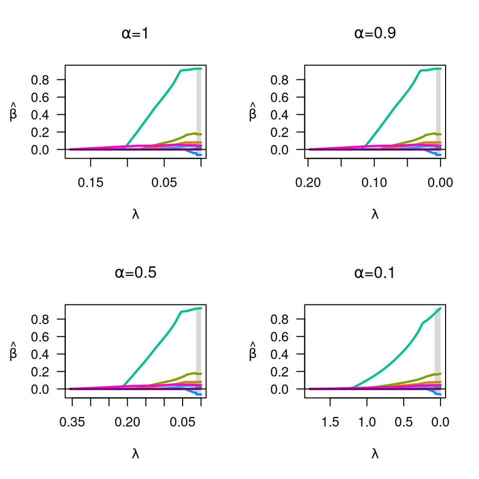
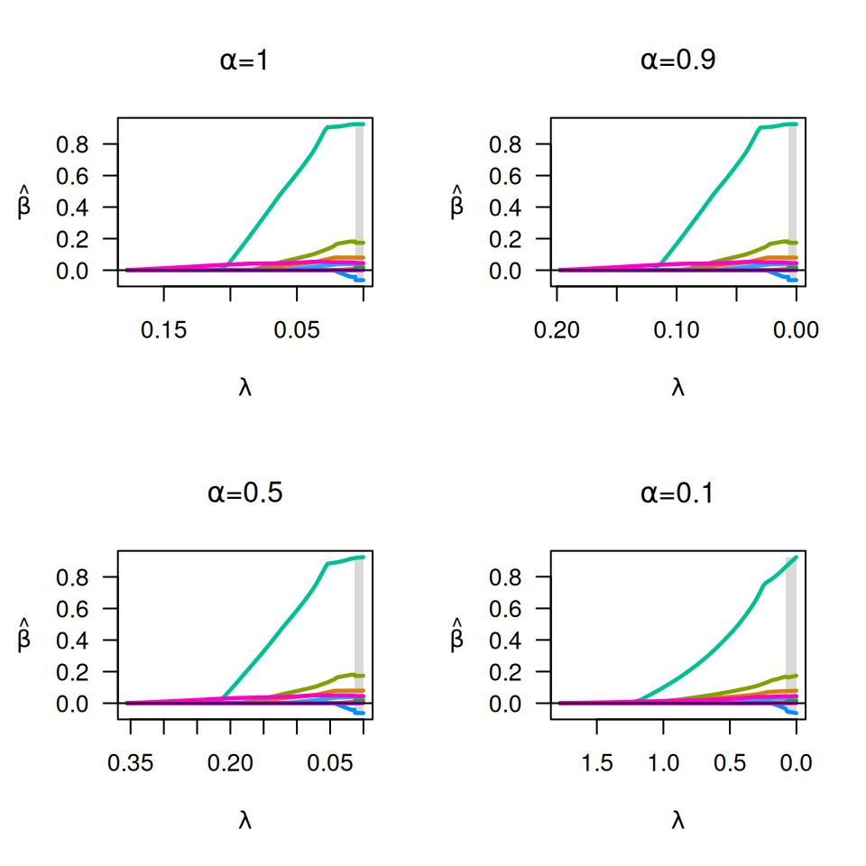

Fit coefficients paths for MCP- or SCAD-penalized regression models over a grid of values for the regularization parameter lambda. Fits linear and logistic regression models, with option for an additional L2 penalty.
Usage
ncvreg(
X,
y,
family = c("gaussian", "binomial", "poisson"),
penalty = c("MCP", "SCAD", "lasso"),
gamma = switch(penalty, SCAD = 3.7, 3),
alpha = 1,
lambda.min = ifelse(n > p, 0.001, 0.05),
nlambda = 100,
lambda,
eps = 1e-04,
max.iter = 10000,
convex = TRUE,
dfmax = p + 1,
penalty.factor = rep(1, ncol(X)),
warn = TRUE,
returnX,
...
)Arguments
- X
The design matrix, without an intercept.
ncvregstandardizes the data and includes an intercept by default.- y
The response vector.
- family
Either "gaussian", "binomial", or "poisson", depending on the response.
- penalty
The penalty to be applied to the model. Either "MCP" (the default), "SCAD", or "lasso".
- gamma
The tuning parameter of the MCP/SCAD penalty (see details). Default is 3 for MCP and 3.7 for SCAD.
- alpha
Tuning parameter for the Mnet estimator which controls the relative contributions from the MCP/SCAD penalty and the ridge, or L2 penalty.
alpha=1is equivalent to MCP/SCAD penalty, whilealpha=0would be equivalent to ridge regression. However,alpha=0is not supported;alphamay be arbitrarily small, but not exactly 0.- lambda.min
The smallest value for lambda, as a fraction of lambda.max. Default is 0.001 if the number of observations is larger than the number of covariates and .05 otherwise.
- nlambda
The number of lambda values. Default is 100.
- lambda
A user-specified sequence of lambda values. By default, a sequence of values of length
nlambdais computed, equally spaced on the log scale.- eps
Convergence threshhold. The algorithm iterates until the RMSD for the change in linear predictors for each coefficient is less than
eps. Default is1e-4.- max.iter
Maximum number of iterations (total across entire path). Default is 10000.
- convex
Calculate index for which objective function ceases to be locally convex? Default is TRUE.
- dfmax
Upper bound for the number of nonzero coefficients. Default is no upper bound. However, for large data sets, computational burden may be heavy for models with a large number of nonzero coefficients.
- penalty.factor
A multiplicative factor for the penalty applied to each coefficient. If supplied,
penalty.factormust be a numeric vector of length equal to the number of columns ofX. The purpose ofpenalty.factoris to apply differential penalization if some coefficients are thought to be more likely than others to be in the model. In particular,penalty.factorcan be 0, in which case the coefficient is always in the model without shrinkage.- warn
Return warning messages for failures to converge and model saturation? Default is TRUE.
- returnX
Return the standardized design matrix along with the fit? By default, this option is turned on if X is under 100 MB, but turned off for larger matrices to preserve memory. Note that certain methods, such as
summary.ncvreg()require access to the design matrix and may not be able to run ifreturnX=FALSE.- ...
Not used.
Value
An object with S3 class "ncvreg" containing:
- beta
The fitted matrix of coefficients. The number of rows is equal to the number of coefficients, and the number of columns is equal to
nlambda.- iter
A vector of length
nlambdacontaining the number of iterations until convergence at each value oflambda.- lambda
The sequence of regularization parameter values in the path.
- penalty, family, gamma, alpha, penalty.factor
Same as above.
- convex.min
The last index for which the objective function is locally convex. The smallest value of lambda for which the objective function is convex is therefore
lambda[convex.min], with corresponding coefficientsbeta[,convex.min].- loss
A vector containing the deviance (i.e., the loss) at each value of
lambda. Note that forgaussianmodels, the loss is simply the residual sum of squares.- n
Sample size.
Additionally, if returnX=TRUE, the object will also contain
- X
The standardized design matrix.
- y
The response, centered if
family='gaussian'.
Details
The sequence of models indexed by the regularization parameter lambda is
fit using a coordinate descent algorithm. For logistic regression models,
some care is taken to avoid model saturation; the algorithm may exit early in
this setting. The objective function is defined to be
$$Q(\beta|X, y) = \frac{1}{n} L(\beta|X, y) + P_\lambda(\beta),$$
where the loss function L is the deviance (-2 times the log likelihood) for
the specified outcome distribution (gaussian/binomial/poisson). See
here for more
details.
This algorithm is stable, very efficient, and generally converges quite rapidly to the solution. For GLMs, adaptive rescaling is used.
References
Breheny P and Huang J. (2011) Coordinate descent algorithms for nonconvex penalized regression, with applications to biological feature selection. Annals of Applied Statistics, 5: 232-253. doi:10.1214/10-AOAS388
Examples
# Linear regression --------------------------------------------------
data(Prostate)
X <- Prostate$X
y <- Prostate$y
op <- par(mfrow=c(2,2))
fit <- ncvreg(X, y)
plot(fit, main=expression(paste(gamma,"=",3)))
fit <- ncvreg(X, y, gamma=10)
plot(fit, main=expression(paste(gamma,"=",10)))
fit <- ncvreg(X, y, gamma=1.5)
plot(fit, main=expression(paste(gamma,"=",1.5)))
fit <- ncvreg(X, y, penalty="SCAD")
plot(fit, main=expression(paste("SCAD, ",gamma,"=",3)))
 par(op)
op <- par(mfrow=c(2,2))
fit <- ncvreg(X, y)
plot(fit, main=expression(paste(alpha,"=",1)))
fit <- ncvreg(X, y, alpha=0.9)
plot(fit, main=expression(paste(alpha,"=",0.9)))
fit <- ncvreg(X, y, alpha=0.5)
plot(fit, main=expression(paste(alpha,"=",0.5)))
fit <- ncvreg(X, y, alpha=0.1)
plot(fit, main=expression(paste(alpha,"=",0.1)))
par(op)
op <- par(mfrow=c(2,2))
fit <- ncvreg(X, y)
plot(mfdr(fit)) # Independence approximation
plot(mfdr(fit), type="EF") # Independence approximation
perm.fit <- perm.ncvreg(X, y)
plot(perm.fit)
plot(perm.fit, type="EF")
par(op)
op <- par(mfrow=c(2,2))
fit <- ncvreg(X, y)
plot(fit, main=expression(paste(alpha,"=",1)))
fit <- ncvreg(X, y, alpha=0.9)
plot(fit, main=expression(paste(alpha,"=",0.9)))
fit <- ncvreg(X, y, alpha=0.5)
plot(fit, main=expression(paste(alpha,"=",0.5)))
fit <- ncvreg(X, y, alpha=0.1)
plot(fit, main=expression(paste(alpha,"=",0.1)))
par(op)
op <- par(mfrow=c(2,2))
fit <- ncvreg(X, y)
plot(mfdr(fit)) # Independence approximation
plot(mfdr(fit), type="EF") # Independence approximation
perm.fit <- perm.ncvreg(X, y)
plot(perm.fit)
plot(perm.fit, type="EF")
 par(op)
# Logistic regression ------------------------------------------------
data(Heart)
X <- Heart$X
y <- Heart$y
op <- par(mfrow=c(2,2))
fit <- ncvreg(X, y, family="binomial")
plot(fit, main=expression(paste(gamma,"=",3)))
fit <- ncvreg(X, y, family="binomial", gamma=10)
plot(fit, main=expression(paste(gamma,"=",10)))
fit <- ncvreg(X, y, family="binomial", gamma=1.5)
plot(fit, main=expression(paste(gamma,"=",1.5)))
fit <- ncvreg(X, y, family="binomial", penalty="SCAD")
plot(fit, main=expression(paste("SCAD, ",gamma,"=",3)))
par(op)
op <- par(mfrow=c(2,2))
fit <- ncvreg(X, y, family="binomial")
plot(fit, main=expression(paste(alpha,"=",1)))
fit <- ncvreg(X, y, family="binomial", alpha=0.9)
plot(fit, main=expression(paste(alpha,"=",0.9)))
fit <- ncvreg(X, y, family="binomial", alpha=0.5)
plot(fit, main=expression(paste(alpha,"=",0.5)))
fit <- ncvreg(X, y, family="binomial", alpha=0.1)
plot(fit, main=expression(paste(alpha,"=",0.1)))

par(op)
par(op)
# Logistic regression ------------------------------------------------
data(Heart)
X <- Heart$X
y <- Heart$y
op <- par(mfrow=c(2,2))
fit <- ncvreg(X, y, family="binomial")
plot(fit, main=expression(paste(gamma,"=",3)))
fit <- ncvreg(X, y, family="binomial", gamma=10)
plot(fit, main=expression(paste(gamma,"=",10)))
fit <- ncvreg(X, y, family="binomial", gamma=1.5)
plot(fit, main=expression(paste(gamma,"=",1.5)))
fit <- ncvreg(X, y, family="binomial", penalty="SCAD")
plot(fit, main=expression(paste("SCAD, ",gamma,"=",3)))
par(op)
op <- par(mfrow=c(2,2))
fit <- ncvreg(X, y, family="binomial")
plot(fit, main=expression(paste(alpha,"=",1)))
fit <- ncvreg(X, y, family="binomial", alpha=0.9)
plot(fit, main=expression(paste(alpha,"=",0.9)))
fit <- ncvreg(X, y, family="binomial", alpha=0.5)
plot(fit, main=expression(paste(alpha,"=",0.5)))
fit <- ncvreg(X, y, family="binomial", alpha=0.1)
plot(fit, main=expression(paste(alpha,"=",0.1)))

par(op)